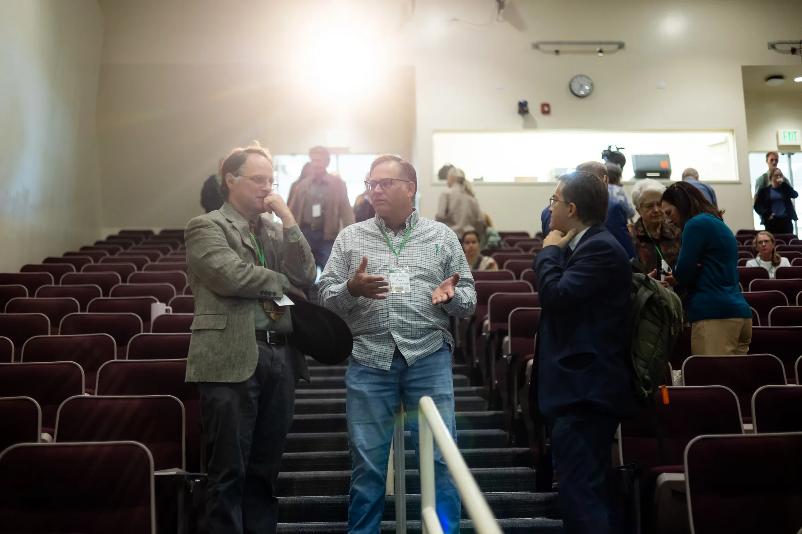

Your speaker sent you here, and will be in the room.
You have read it fifty times. You have never seen it like this.
Two days in Provo with the people who have spent their careers inside the Book of Mormon. November 6 and 7. Thirty dollars.
Most of us meet the Book of Mormon the same way. A chapter at a time, early in the morning, in a hurry, in the same chair. It becomes familiar the way a hallway becomes familiar. You stop seeing it.
That is not a failure of faith. It is what happens to any text you live with long enough. Familiarity is not the opposite of reverence, but it is the opposite of noticing.
A book this strange should not feel this ordinary.
There is a whole world of people who never stopped noticing. Scholars who have spent thirty years on a single thread of its argument. Painters who have put its scenes on canvas until the images became the ones your whole church sees in its head. Writers, filmmakers, historians, poets.
They do not usually gather. They publish in different places, show in different galleries, and talk past each other. Once a year, they are in one room.

Book of Mormon Culture ConferenceNovember 6 and 7, Provo Marriott on Center
Register, $30What two days actually looks like
Friday and Saturday, November 6 and 7, at the Provo Marriott on Center. Keynotes from Terryl Givens, Rosalynde F. Welch and Bradley R. Wilcox. Dozens of sessions in between, run by scholars and artists rather than by a stage crew.
Friday evening the foundation honors Terryl Givens for achievement in Book of Mormon letters. Saturday afternoon it recognizes the painter Walter Rane, joined by Brad Pelo, president of The Chosen, and the journalist Jane Clayson Johnson. The conference closes with the Informed Saints podcast recording its final episode in front of the audience.


Thirty dollars. Both days. Every session.
The Friday honoree banquet and the Saturday box lunch were separate tickets, and both have already sold out. Conference registration itself is still open.
Registration is $30 per personFull registration, both days.
Hold my seat